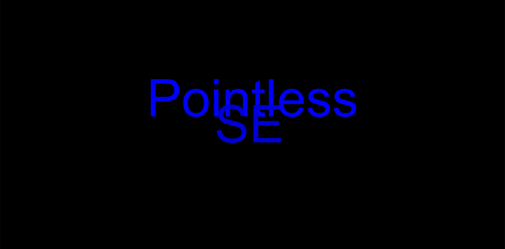

LightSpeed |
Games |
About
Pointless SE: Coming Oct 22
 So. No Pointless game has been out in a while. A while back I tried making Pointless 3, however development went south. In the end I canceled it. Now, I don't have any projects and decided to make a new Pointless game. This isn't any pointless game, however. This is a collection of all the Pointless games, and more will come soon. Some notable inclusions are the Pointless 3 Beta builds, some new minigames such as Lava Jump, and a very cool addition in Pointless 1.Currently this is in refinement, so this will more than likely be released on time.
Introducing Cell
I thought it would be cool if I added some stuff to the Pointless Engine (Clarity), but after a while I decided to fork it. This means I can add a bunch of stuff to the engine. Some of the planned features include teleportation, traps, gates, MAYBE enemy AI, and more. The first game using this would be the Pointless 2 Remaster. So this should be cool. Oct 7, 2020
Pointless 2 Remaster
So. No Pointless game has been out in a while. A while back I tried making Pointless 3, however development went south. In the end I canceled it. Now, I don't have any projects and decided to make a new Pointless game. This isn't any pointless game, however. This is a collection of all the Pointless games, and more will come soon. Some notable inclusions are the Pointless 3 Beta builds, some new minigames such as Lava Jump, and a very cool addition in Pointless 1.Currently this is in refinement, so this will more than likely be released on time.
Introducing Cell
I thought it would be cool if I added some stuff to the Pointless Engine (Clarity), but after a while I decided to fork it. This means I can add a bunch of stuff to the engine. Some of the planned features include teleportation, traps, gates, MAYBE enemy AI, and more. The first game using this would be the Pointless 2 Remaster. So this should be cool. Oct 7, 2020
Pointless 2 Remaster
 So. I guess this is the first major project after starting back up. It seems like Pointless 2 has been the most disliked in the series, so I am hoping this remaster of it will bring interest. This is the only game that the code is actually somewhat decent, so this shouldn't take long.I will make another post when its done i guess.
Visit the archive here.
So. I guess this is the first major project after starting back up. It seems like Pointless 2 has been the most disliked in the series, so I am hoping this remaster of it will bring interest. This is the only game that the code is actually somewhat decent, so this shouldn't take long.I will make another post when its done i guess.
Visit the archive here.